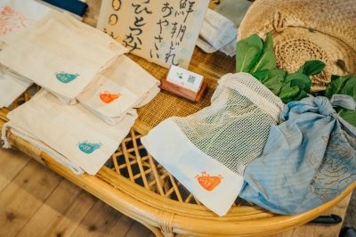
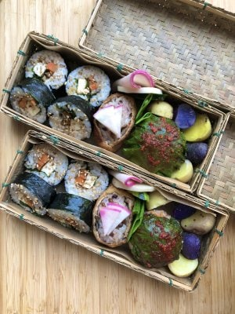

<div class="top_news_wrapper">
    <section class="top_news">
        <div class="top_news_heading_wrapper">
            <h2 class="top_news_heading">NEWS</h2>
            <p class="top_news_sub-heading">お知らせ</p>
        </div>
        <div class="top_news_item js-top-news-item">
            <div class="top_news_item_img">
                
            </div>
            <div class="top_news_item_inner">
                <div class="top_news_item_info">
                    <p class="top_news_item_tag shop_bg-all">総合</p>
                    <p class="top_news_item_date">2022.09.29</p>
                </div>
                <h3 class="top_news_item_heading">2022.10.3　きさいちワンダーテラス森の縁側マルシェ 出店します!</h3>
                <p class="news_item_txt accordion-body">10月3日(月)12:00〜16:00
                    <br>インスタグラムにて最新情報配信中
                    <br>＠kisaichi_wonderterrace
                    <br>
                    <a href="https://www.instagram.com/kisaichi_wonderter" target="_blank" rel="noopenner">https://www.instagram.com/kisaichi_wonderter</a>
                    <br>
                    <br>場所：大阪府交野市私市9-4-5
                    <br>星の里いわふね　グリーンビレッジ1階
                    <br>きさいちBASE
                    <br>
                    <br>秋の味覚のお野菜や、伝説の「たけ弁」もカムバック。葛のお菓子とのコラボやシーグラスアクセサリーとのコラボなど。
                    <br>盛りだくさんの予定です✨
                    <span class="news_item_more accordion-more js-more-news">…
                        <span>続きを読む</span>
                    </span>
                </p>
            </div>
        </div>
        <div class="top_news_item js-top-news-item">
            <div class="top_news_item_img">
                
            </div>
            <div class="top_news_item_inner">
                <div class="top_news_item_info">
                    <p class="top_news_item_tag shop_bg-all">総合</p>
                    <p class="top_news_item_date">2022.06.01</p>
                </div>
                <h3 class="top_news_item_heading">6/12　うめきたmeet fun marche　出店します</h3>
                <p class="news_item_txt accordion-body">〇新鮮お野菜
                    <br>〇オーガニックコットン風呂敷＆プロデュースバッグ
                    <br>〇ベジ弁当
                    <br>
                    <br>を販売予定🌟
                    <br>
                    <br>お野菜は何があるかはお楽しみに。
                    <br>
                    <br>----------------------------------
                    <br>「楽しい」に出会える場所なのだ！
                    <br>うめきたmeet fun marche
                    <br>６月12日（日）
                    <br>11時〜16時
                    <br>inうめきた外庭スクエア
                    <br>（梅田駅から徒歩7分）
                    <br>@meet.fun.marche_nanoda
                    <br>-----------------------------------
                    <span class="news_item_more accordion-more js-more-news">…
                        <span>続きを読む</span>
                    </span>
                </p>
            </div>
        </div>
        <div class="top_more">
            <a href="./news.html">NEWS一覧へ</a>
        </div>
    </section>
</div>
